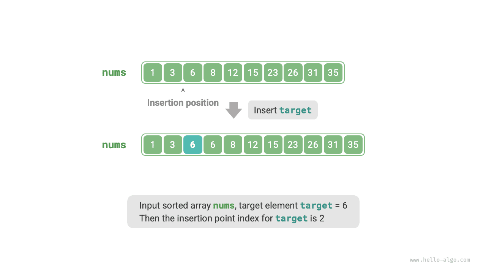
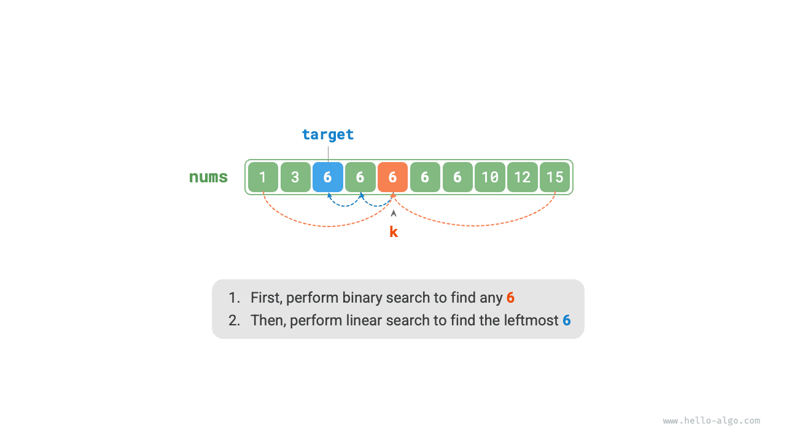

البحث
نقطة الإدراج في البحث الثنائي
لا يقتصر استخدام البحث الثنائي على البحث عن العناصر المستهدفة، بل يمكنه أيضاً حل كثير من المسائل المتغيّرة، مثل إيجاد موضع إدراج عنصر مستهدف.
حالة عدم وجود عناصر مكررة
بمعطى مصفوفة مرتّبة nums طولها $n$ وعنصر target، حيث لا تحتوي المصفوفة على عناصر مكررة، أدرج target في nums مع الحفاظ على ترتيبها المرتّب. وإذا كان target موجوداً في المصفوفة، فأدرجه على يسار العناصر المتساوية معه. وأعد فهرس target بعد الإدراج. ويوضح الشكل أدناه مثالاً على ذلك.

إذا أردنا إعادة استخدام شيفرة البحث الثنائي من القسم السابق، فعلينا الإجابة عن السؤالين التاليين.
السؤال 1: عندما تحتوي المصفوفة على target، هل فهرس نقطة الإدراج هو نفسه فهرس ذلك العنصر؟
تتطلب المسألة إدراج target على يسار العناصر المتساوية، أي أن target المُدرج حديثاً يحلّ محل موضع target الأصلي. بعبارة أخرى، عندما تحتوي المصفوفة على target، يكون فهرس نقطة الإدراج هو فهرس ذلك target.
السؤال 2: عندما لا تحتوي المصفوفة على target، فما فهرس نقطة الإدراج؟
لتحليل ذلك أكثر، لنتأمل عملية البحث الثنائي: عندما يكون nums[m] < target، يتحرك $i$، أي أن المؤشر $i$ يقترب من العناصر الأكبر من target أو المساوية له. وبالمثل، يقترب المؤشر $j$ دائماً من العناصر الأصغر من target أو المساوية له.
لذلك، عند انتهاء البحث الثنائي، لا بد أن يشير $i$ إلى أول عنصر أكبر من target، وأن يشير $j$ إلى العنصر الأقصى يميناً الأصغر من target. ومن ثمّ، عندما لا تحتوي المصفوفة على target، يكون فهرس الإدراج $i$. والشيفرة كما يلي:
Go
/* البحث الثنائي عن نقطة الإدراج (دون عناصر مكررة) */
func binarySearchInsertionSimple(nums []int, target int) int {
// تهيئة المجال المغلق [0, n-1]
i, j := 0, len(nums)-1
for i <= j {
// حساب فهرس المنتصف m
m := i + (j-i)/2
if nums[m] < target {
// يقع target في الفترة [m+1, j]
i = m + 1
} else if nums[m] > target {
// يقع target في الفترة [i, m-1]
j = m - 1
} else {
// العثور على target، إعادة نقطة الإدراج m
return m
}
}
// لم يُعثر على target، إعادة نقطة الإدراج i
return i
}
TypeScript
/* البحث الثنائي عن نقطة الإدراج (دون عناصر مكررة) */
function binarySearchInsertionSimple(
nums: Array<number>,
target: number
): number {
let i = 0,
j = nums.length - 1; // تهيئة المجال المغلق [0, n-1]
while (i <= j) {
const m = Math.floor(i + (j - i) / 2); // حساب فهرس المنتصف m، واستخدام Math.floor() للتقريب نحو الأسفل
if (nums[m] < target) {
i = m + 1; // يقع target في الفترة [m+1, j]
} else if (nums[m] > target) {
j = m - 1; // يقع target في الفترة [i, m-1]
} else {
return m; // العثور على target، إعادة نقطة الإدراج m
}
}
// لم يُعثر على target، إعادة نقطة الإدراج i
return i;
}
حالة وجود عناصر مكررة
بناءً على المسألة السابقة، افترض أن المصفوفة قد تحتوي على عناصر مكررة، مع بقاء كل ما عدا ذلك على حاله.
لنفترض وجود عدة عناصر target في المصفوفة. لا يستطيع البحث الثنائي العادي إلا إعادة فهرس واحد من target، ولا يمكنه تحديد عدد عناصر target الواقعة على يسار ذلك العنصر ويمينه.
تتطلب المسألة إدراج العنصر المستهدف في أقصى الموضع يساراً، لذا علينا إيجاد فهرس target الأقرب إلى أقصى اليسار في المصفوفة. والنهج الأولي المباشر هو اتباع الخطوات الموضحة في الشكل أدناه:
- نفّذ البحث الثنائي للحصول على فهرس أي
target، ويُرمز إليه بـ$k$. - بدءاً من الفهرس $k$، نفّذ اجتيازاً خطياً نحو اليسار، وأعد النتيجة عند العثور على
targetالأقرب إلى أقصى اليسار.

ورغم أن هذه الطريقة تنجح، فهي تتضمن بحثاً خطياً، مما يجعل التعقيد الزمني $O(n)$. وعندما تحتوي المصفوفة على عناصر target مكررة كثيرة، تصبح هذه الطريقة شديدة الانخفاض في الكفاءة.
لنفكّر الآن في توسيع شيفرة البحث الثنائي. وكما يوضح الشكل أدناه، تبقى العملية الكلية دون تغيير: في كل تكرار، نحسب أولاً فهرس المنتصف $m$، ثم نقارن target بـnums[m]، مما يؤدي إلى الحالات التالية:
- عندما يكون
nums[m] < targetأوnums[m] > target، فذلك يعني أنtargetلم يُعثر عليه بعد، لذا استخدم عملية تقليص المجال المعتادة في البحث الثنائي لتقريب المؤشرين $i$ و$j$ منtarget. - وعندما يكون
nums[m] == target، فذلك يعني أن العناصر الأصغر منtargetتقع في الفترة $[i, m - 1]$، لذا استخدم $j = m - 1$ لتقليص المجال، وبذلك يقترب المؤشر $j$ من العناصر الأصغر منtarget.
بعد انتهاء الحلقة، يشير $i$ إلى target الأقرب إلى أقصى اليسار، ويشير $j$ إلى العنصر الأقصى يميناً الأصغر من target، وبالتالي يكون الفهرس $i$ هو نقطة الإدراج.
ولاحظ الشيفرة التالية: الفرعان nums[m] > target وnums[m] == target ينفذان العملية نفسها، لذا يمكن دمجهما.
ومع ذلك، يمكننا إبقاء الشروط متفرعة كما هي، لأن المنطق أوضح وأكثر قابلية للقراءة.
Go
/* البحث الثنائي عن نقطة الإدراج (مع عناصر مكررة) */
func binarySearchInsertion(nums []int, target int) int {
// تهيئة المجال المغلق [0, n-1]
i, j := 0, len(nums)-1
for i <= j {
// حساب فهرس المنتصف m
m := i + (j-i)/2
if nums[m] < target {
// يقع target في الفترة [m+1, j]
i = m + 1
} else if nums[m] > target {
// يقع target في الفترة [i, m-1]
j = m - 1
} else {
// العنصر الأقصى يميناً الأصغر من target يقع في الفترة [i, m-1]
j = m - 1
}
}
// إعادة نقطة الإدراج i
return i
}
TypeScript
/* البحث الثنائي عن نقطة الإدراج (مع عناصر مكررة) */
function binarySearchInsertion(nums: Array<number>, target: number): number {
let i = 0,
j = nums.length - 1; // تهيئة المجال المغلق [0, n-1]
while (i <= j) {
const m = Math.floor(i + (j - i) / 2); // حساب فهرس المنتصف m، واستخدام Math.floor() للتقريب نحو الأسفل
if (nums[m] < target) {
i = m + 1; // يقع target في الفترة [m+1, j]
} else if (nums[m] > target) {
j = m - 1; // يقع target في الفترة [i, m-1]
} else {
j = m - 1; // العنصر الأقصى يميناً الأصغر من target يقع في الفترة [i, m-1]
}
}
// إعادة نقطة الإدراج i
return i;
}
تستخدم شيفرة هذا القسم نهج «المجال المغلق» في كل مواضعها. ويمكن للقارئ المهتم تنفيذ نهج «مغلق من اليسار، مفتوح من اليمين» بنفسه.
إجمالاً، البحث الثنائي ليس سوى تحديد هدف بحث منفصل لكل من المؤشرين $i$ و$j$. وقد يكون الهدف عنصراً محدداً (مثل target) أو نطاقاً من العناصر (مثل العناصر الأصغر من target).
ومع كل تكرار في البحث الثنائي، يقترب المؤشران $i$ و$j$ تدريجياً من هدفيهما المحددين سلفاً. وفي النهاية، إما أن يعثرا على الجواب وإما أن يتوقفا بعد تجاوز الحدود.